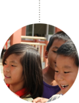

开始建站
第一次线上活动 晒露齿照，赢亲子游
中山生活网正式上线 / 独立IP超1万
PV 超过10万
亲子频道上线 、公益活动1500对爱心鞋子
中山生活网3周年倒数
拥抱移动互联网，触屏版、苹果、安卓
客户端全面上线，移动流量持续走高
中山生活网WAP改版上线
微信公众号突破5万粉丝
以O2O为核心，全力打造房产、汽车
亲子、婚嫁等服务行业的电商平台
全国战略二手车项目，车壁虎开始运营
中山生活网WAP改版上线
微信公众号突破5万粉丝
接下来的时间我们将在通用航空旅游
二手车方向发力创造更大的辉煌
中山圈囊括了岐江社区、中山妈妈、乐车生活、中山房产、博爱100等生活娱乐版块,
是一款定位于中山本地中青年消费人群的手机移动端APP
中山生活网产品众多其中包括了各专业频
道的专属产品乐房网
乐车网，家居频道，美食频道等
以及中山生活网其他产品
制等中山生活网网络
营销团队将针对客户需求为客户异化
网络营销排期
挑选出最适合的产品及服务进行
最终为客户选择出性价比最高的网络营销服务组合
为满足越来越多企业的在线营销需求
中山生活网(TT0760.com)
总结了多年的网络营销
经验并结合众多案例分析归
纳出"I.D.E.A."高效在线解决方案
方案包括网络整合营销差异化
广告策略、效果跟踪及评估等内容
中山生活网积累了丰厚的社会资源和
商业资源。中山生活网网
络营销团队能够将客户需求整合
通过站群优势调动客户资源
让更多的商家在合作中发挥自身优势
强强联合，最终达到多赢的效果
联系我们
Welcome ContactUs
联系电话
传真
邮件
我们的地址
企业微博
0760-88380850
400-878-1111
1218416031@qq.com
广东省中山市东区富湾南路伊电园D2栋3楼
weibo.com/tt0760
Responsibility
中山生活网：社会责任感的中山生活门户
回报社会回报中山
of pure and fresh and natural
"TT公益"
是中山生活网
的公益小组成立于2010年
TT公益通过组织募捐活动
帮助困难群众等方式
为需要帮助的人带去关爱
几年间
中山公益组织活动数百次
参与公益活动的网友数以千计
帮助了几百名贫困儿童渡过难关
更让许多孤寡老人体验到了亲人一般的温暖......
中山公益以感恩、关爱、奉献为团体宗旨
是一个充满爱心与热情的团队
成员怀着感恩之心
奉献社会随着参与公益事业的人数增多
人们对公益事业的认可程度提高
越来越多的个人和企业加入到公益事业中来
在未来的日子里
中山公益定将继续坚持回报社会的理念
做更多有益于中山
有益于公益事业发展
的实事

网站备案：粤ICP备11039662号-3 中山市威盛网络科技股份有限公司
增值电信业务经营许可证粤B2-20160251